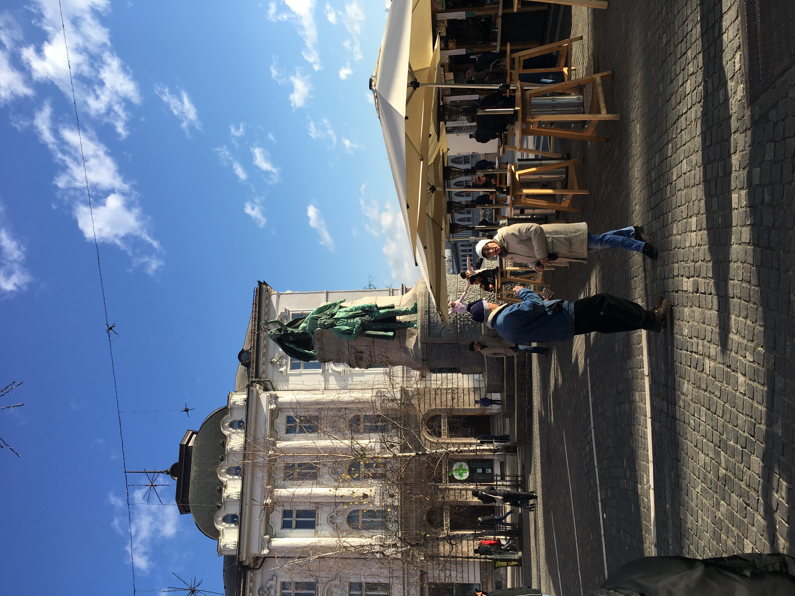
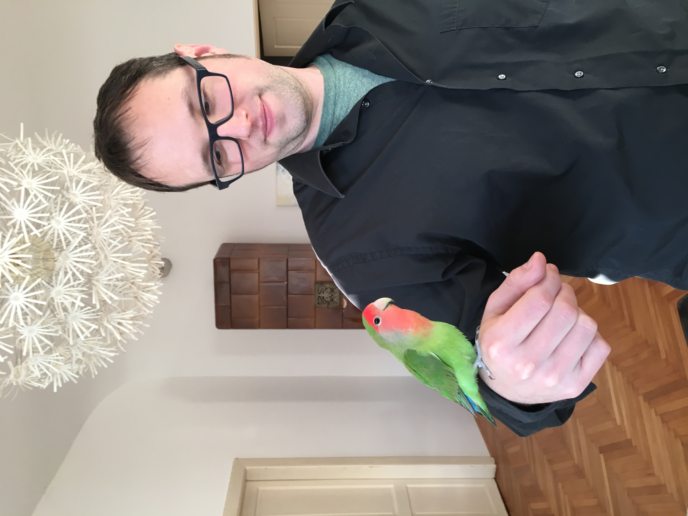

Power Code Academy Chickens
Falcons

Favorite website:
Wikipedia
Egrets

Favorite website:
Kelly and Garett Get Away
Red Robins
Favorite website:
Google
My Favorite Foods:
peanut butter toast
magic in the middles
coffee
Garett's Favorite Foods:
eggs benedict
green curry
lattes